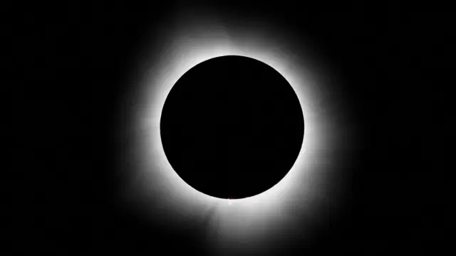

perfil

Minha biografia 
O eclipse lunar é um fenômeno astronômico que ocorre na fase de Lua cheia quando a Terra fica entre o Sol e a Lua e projeta sua sombra sobre o satélite. Ele pode ser observado a olho nu com segurança, sem risco para a visão, em qualquer região onde seja noite durante o evento.